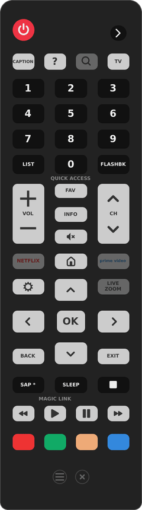

Beanjar
LG TV firmware in virtual machines on your computer.
Boot LG’s own TV software from your firmware file, in a window with a remote.
A TV in a window
Runs LG webOS from version 1 onwards, plus NetCast 4.5 and SimpleSmart.
Built like the TV itself: the UI is drawn on your GPU, and video is decoded on your computer and shown on a plane of its own.
The optional web viewer shows it in a browser, and can be opened to your network.


What it is for
-
Test your apps
Developer Mode and Homebrew Channel, on many webOS versions.
-
Break things safely
Real firmware, close to a real TV: try system mods on many models without bricking one.
-
See what the TV sends
mitmproxy in tun mode catches almost all of its traffic, with HTTPS decrypted where possible.
-
Keep old firmware alive
Run TVs whose hardware is long gone.
Get Beanjar
For Debian 13 and the Raspberry Pi OS built on it.
System requirements
- CPU: Arm Cortex-A72 to Cortex-A710 run it with KVM; other CPUs emulate it in software.
- Memory: 4 GB or more.
- Graphics: OpenGL 3.1 and OpenGL ES 3.0; integrated GPUs are fine.
-
Download the packages
From the releases page.
-
Install them
With
apt; the user guide has the command. -
Make a virtual TV
Run
beanjar, choose New VM, give it your firmware, then Start and Connect.
$ beanjar create tv1 --firmware /path/to/extracted-paks --import
$ beanjar start tv1
$ beanjar viewer open tv1 --remote
$ beanjar stop tv1beanjar --help lists every command.
Works on
-
ARM-based SBCs
Raspberry Pi, ROCK Pi and similar: runs the TV with KVM.
-
Your computer
Linux, WSL, or macOS with Docker*; CPU emulated.
-
CI/CD**
For automated testing.
* Docker and ** CI/CD are planned and not available yet.